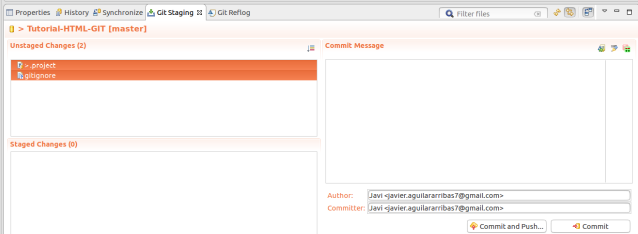

Empezamos git con eclipse
Como crear un repositorio
Configurar Git
Git Init
En primer lugar debemos descargarnos e instalar Eclipse en nuestro sistema. Una vez descargado e instalado eclipse debemos instalar el plugin git en nuestro Eclipse.
Desde aquí debemos añadir el repositorio del marketplace que incluye los plugins. Para ello debemos pulsar sobre el botón “Add” y añadir en la ventana que aparece el siguiente repositorio.

Ahora nos saldran los plugins disponibles.Seleccionaremos el paquete “Eclipse Git Team Provider” y pulsamos sobre next.

Se descargarán los archivos necesarios para poder usar Git desde nuestro eclipse. Y reiniciamos el Eclipse.
Una vez reiniciado Eclipse debemos conectarnos a nuestra cuenta de Git para empezar a utilizarlo. Para ello debemos seleccionar el menú “Window” y allí la opción Preferences.
Una vez allí situarnos en Preferences > Team > Git >Configuration
Una vez allí seleccionamos “Add entry” y debemos introducir los valores user.name y user.email para identificarnos.
Una vez hechos estos pasos ya tenemos nuestro Eclipse listo para programar en equipo y con control de versiones, tanto para crear proyectos nuevos como para abrir los ya existentes.
Git Ignore
Creamos un gitignore para ignorar archivos.
Guardar cambios
Git add y como hacer un commit
Arrastramos lo que queremos commitear a “staged changes” y ponemos un mensaje del commit.

Despues hacemos click en “commit” para añadir el commit o en “Commit and Push” si queremos subir el commit a nuestro git.
Git stash

Comprobando un repositorio
Git status
Git log
Aquí podemos ver la historia de los commits.

Deshacer cambios
Git reset

Uniendo "historias"
Git rebase
Git reflog
Aquí vemos una historia mas detallada de lo que hemos echo en nuestro proyecto.

Colaborando
Syncing
Git remote
Git fetch

Git pull
Para bajarte todos los cambios de tu proyecto a tu repositorio hacemos click derecho sobre el proyecto y damos a pull.

Git push
Opciones de Ramas
Git branch
Git checkout
Con doble click sobre la rama a la que queremos cambiar, hacemos un checkout y nos cambiamos de rama.